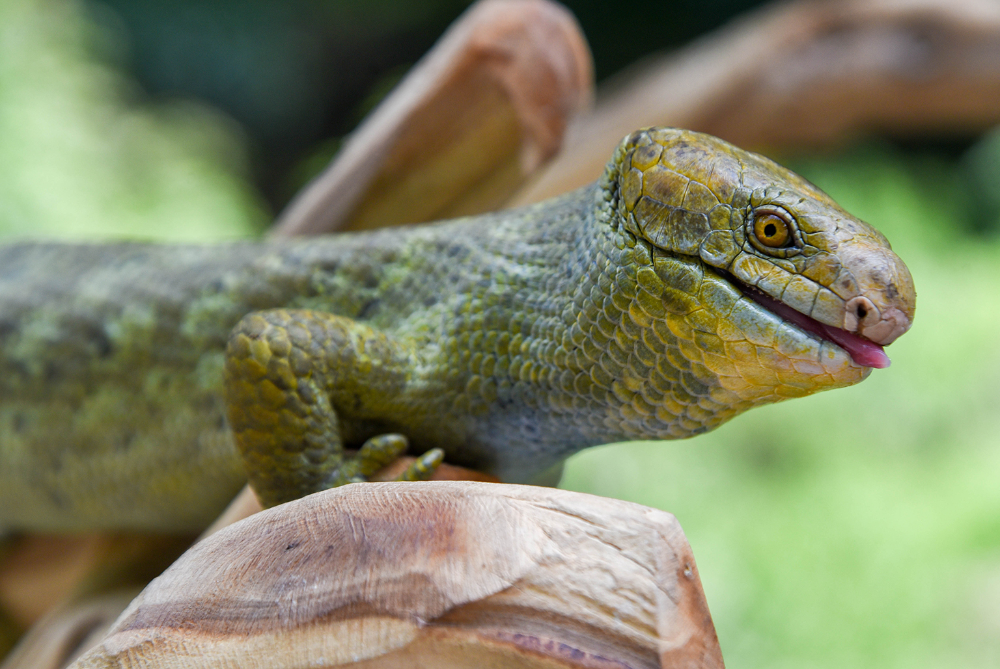
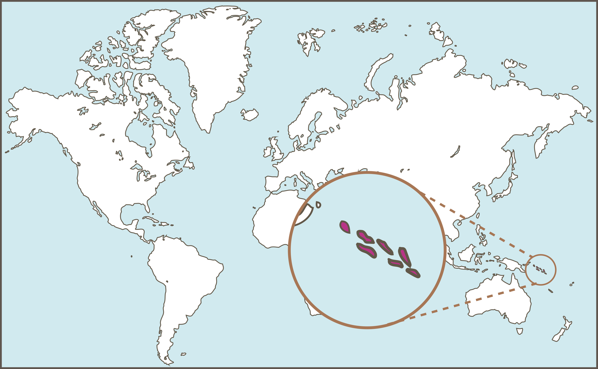

Scientific Name
Corucia Zebrata

Corucia Zebrata
Least Concern
Prehensile Tail Skink have a flat head with prehensile tails and small eyes. They have thick curled nails. These skinks can reach up to 28 inches and weigh between 14 to 28 ounces.

15-25 years
Leaves, fruits and flowers
ovoviviparous[1]
They are mostly nocturnal and crepuscular[2]
Often found alone or in pairs
They use their tongue to sense and smell